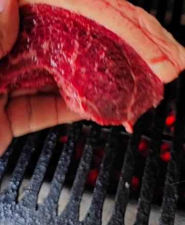
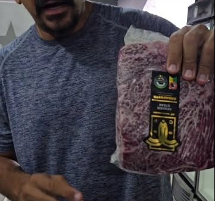
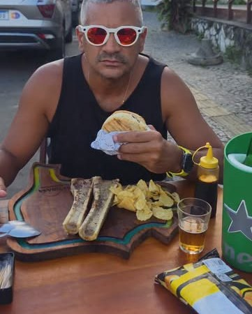
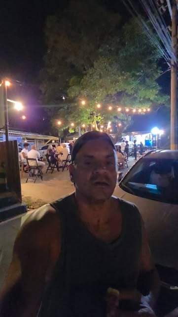

Melhor casa de carnes da Bahia · 7 unidades
Semfrufru.
Aqui o churrasco é sem frufru e a carne é pra banguela. Axé tocando o tempo todo.

A mais perto de você
As unidades
Toque numa fita para ver no mapa. "Como chegar" abre a rota no seu celular.
Barra
Aqui é assim. Você escolhe. A gente assa.



Quinta tem axé na Pituba
Autorais no O Baiano Pituba, quinta-feira. Couvert + pulseira. Reserve a mesa antes que lota.
Playlist de axé
A mesma que toca na casa. Bota pra tocar no churrasco de casa também.

Geramos movimento numa área até então pouco frequentada. Axé tocando o tempo todo e sempre a melhor carne do mundo. Muitas famílias reunidas.
Av. do Farol, 2907, no estacionamento do Projeto Baleia Jubarte. Abre às 14h.
Palavras do próprio Baiano, na legenda do Instagram.
Ver no mapaPedir ou reservar
Preencha, confira a mensagem e mande. Cai direto no WhatsApp da unidade.